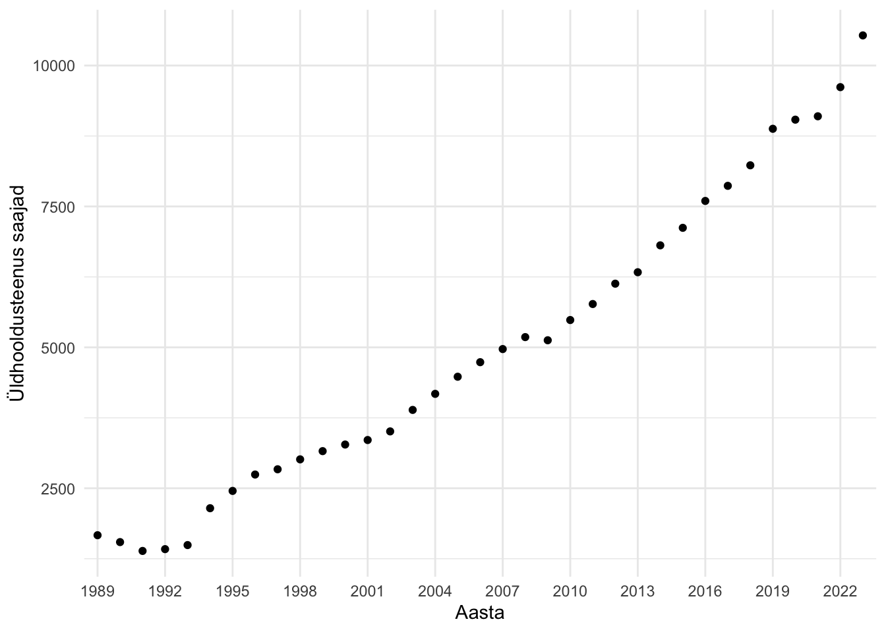

library(tidyverse)
library(readxl)20 Aegridade analüüs
See peatükk annab ülevaate, kuidas kasutada `R`-i aegridade analüüsiks.
Lugemissoovitus
Tooding, L.M. (2020). Aegrea esmasanalüüs. M. Beilmann, A. Roots ja K. Rootalu (toim), Sotsiaalse analüüsi meetodite ja metodoloogia õpibaas. https://samm.ut.ee/aegrea-esmasanaluus/
Kangro, R. (2011). Aegridade analüüs. https://kodu.ut.ee/~rkangro/aegread/2011/aegread.pdf
Note
See peatükk on lõpuni kirjutamata. Täieneb.
Siin näites kasutan Statistikaameti kogutud andmeid hoolekandeteenuste kasutamise kohta Tabel:SK06
andmed<-read_excel("hoolekandeteenused.xlsx",
na="..")Aegridade analüüs võimaldab:
- tuvastada trende - st selgitada välja kas näitaja kasvab, kahaneb või püsib stabiilsena,
- avastada hooajalisust,
- prognoosida, kuidas näitaja tulevikus võib käituda,
- tuvastada anomaaliaid,
Näiteks sotsiaaltöö valdkonnas saab aegridade analüüsi abil planeerida teenuste vajadust või hinnata sekkumise tõhusust.
Aegridade komponentideks on trend, hooajalisus ja juhuslik sündmus.
Analüüsimeetodivalik sõltub andmete hulgast.
- < 12 vaatlust: Ainult kirjeldav statistika, lihtne visualiseerimine
- 12-23 vaatlust: Mann-Kendall test, lihtne lineaarne mudel
- 24-49 vaatlust: Prophet mudel, hooajalisuse analüüs
- 50+ vaatlust: Kõik meetodid, ARIMA mudelid
20.1 Aegrea analüüsimine paketiga Kendall
library(Kendall)Paketti Kendall(McLeod 2022) on hea kasutada siis kui:
- andmeid on vähe (12-30 vaatlust),
- tahad testida, kas trend on olemas,
- andmed ei ole normaalselt jaotunud.
tau on korrelatsioonikordaja, mis mõõdab seose tugevust kahe muutuja vahel. Tau väärtus jääb vahemikku -1 kuni +1.
Tulemuste tõlgendamine:
- tau > 0: kasvav trend
- tau < 0: kahanev trend
- tau ≈ 0: trend puudub
Paketi põhikäsud:
MannKendall()- Mann-Kendall trendi testSeasonalMannKendall()- hooajaline Mann-Kendall test
Esmalt visualiseerin andmed.
Code
andmed|>
filter(!is.na(`Erihoolekandeteenuste kohad`))|>
ggplot(aes(x=Aasta, y=`Erihoolekandeteenuste kohad`))+
geom_line()+
geom_point()+
theme_minimal()+
ggtitle("Erihoolekandeteenuste kohad")Seejärel teen MannKendall testi.
MannKendall(andmed$`Erihoolekandeteenuste kohad`)tau = -0.538, 2-sided pvalue =0.008595Tulemuste tõlgendamine: selgub, et erihoolekandeteenuste kohtade arv perioodil 1989 - 2002 oli kahanevas trendis ning see kahanev trend on statistilisest oluline (tau = -0,538, p < 0.05).
Kui oleks teada ka iga kuu kohta andmed, saaks kasutada käsku SeasonalMannKendall(). Siis võrreldakse igat kuud eraldi eelmiste aastate sama kuudega.
20.2 Aegrea analüüsimine paketiga prophet
prophet(Taylor and Letham 2021) paketti sobib kasutada siis kui on vähematl 24 vaatlust. Näiteks kahe aasta iga kuu vaatlused.
Paketi põhikäsud:
prophet()- mudeli loominefit.prophet()- mudeli treenimine. Kasutatakse harvem ja ainult siis, kui mudeli objekt on loodud ilma andmeteta ning soovitakse mudel hiljem andmetega sobitada.make_future_dataframe()- tuleviku andmete raami loominepredict()- prognoosimineplot()- tulemuste visualiseerimineprophet_plot_components()- komponentide analüüs
Vaatan esmalt kui palju on mul ajaloolisi andmeid.
andmed|>
filter(!is.na(`Üldhooldusteenus saajad`))|>
nrow()[1] 35andmed|>
filter(!is.na(`Üldhooldusteenus saajad`))|>
ggplot(aes(x=Aasta, y=`Üldhooldusteenus saajad`))+
geom_point()+
theme_minimal()+
scale_x_discrete(breaks = as.character(seq(1989, 2024, by = 3))) # kuvan aastaarve üle kolme, et x teljele ära mahuks
prophet() käsk soovib ainult kahte tunnust, aega ja analüüsitavat väärtust. Samas andmestikule on kindlad nõuded ning seal peab olema:
dsveerg, mis sisaldab kuupäevi (DatevõiPOSIXctformaadis) ehk%Y-%m-%d.yveerg, mis sisaldab mõõdetavat väärtust (nt teenuskohtade_arv)
Kui on ainult aastad (näiteks 2015, 2016, jne), siis prophet ei saa neid andmeid kasutada, kuna need ei ole kuupäevad. Veateade ütleb: “Unable to parse date format in column ds”
Lahenduseks on lisada igale aastale juurde kuupäev. Näiteks esimene jaanuar. Teen alamandmestiku jättes alles vaid kaks tunnust.
prophet_andmed<-andmed|>
mutate(
ds = as.Date(paste0(Aasta, "-01-01")),
y = `Üldhooldusteenus saajad`) |>
select(ds, y)Treening ja testandmestiku loomine
Lineaarse mudeli loomine
Mudeli tegemisel saab täpsustada, et soovid analüüsida hooajalisust nädala või päevade lõikes. Vastavalt sellele tuleb kasutada käsu sees täpsustada:
- weekly.seasonality=TRUE
- daily.seasonality=TRUE
Esmalt loon mudeli käsuga prophet(), mis sobitab mudeli kohe andmetega. Saan mudeli objekti, millega saab edasi töötada (ennustada, visualiseerida).
Oluliste sündmustega arvesatmine
prophet(Taylor and Letham 2021) pakett lubab analüüsimisel võtta arvesse kahte tüüpi sündmusi changepoints ja holidays
changepoints- kui eeldad, et sündmused põhjustavad trendi püsiva muutuse. Sobib näiteks seaduse jõustumise või kriisi alguse tähistamiseks, kui eeldad, et trend muutub püsivalt.holidays- kui eeldad, et sündmused põhjustavad ajutise hüppe või languse.
Loon esmalt oluliste sündmuste andmeraami, et oleks endal lihtsam jälgida millal mingi sündmus aset leidis. Sündmuste andmestik peab sisaldama järgmisi veerge:
- ds - aeg,
- holiday - sündmus,
- lower_window - päevade arv enne sündmust (tavaliselt 0),
- upper_window - päevade arv pärast sündmust (tavaliselt 0).
#Seejärel teen uue mudeli (mudel2) käsuga prophet(). Pane tähele, et nüüd ütlen käsu sees ära, et võtaks muutekohad andmestikust syndmused. See sunnib mudelit arvestama trendimuutust just nendel kuupäevadel. Kui muutepunkte pole ette antud, tuvastab käsk need automaatselt ise.
library(prophet)Loading required package: RcppLoading required package: rlang
Attaching package: 'rlang'The following objects are masked from 'package:purrr':
%@%, flatten, flatten_chr, flatten_dbl, flatten_int, flatten_lgl,
flatten_raw, invoke, spliceLogistilise mudeli loomine
Mudeli headuse hindamine
20.3 Aegrea analüüsimine paketiga forecast
library(forecast)